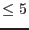
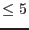

| Parameter | Mand | Type | Default | Constraints |
| pha | yes | list of files | | |
A list of one or more spectrum files, all produced by
rgsspectrum. The task does not enforce any constraint on
the combining of dissimilar spectra.
|
| rmf | no | list of strings | @ | |
A list of response matrix files, all produced by rgsrmfgen.
Each response matrix is paired with the corresponding spectrum and
must be compatible with it. The only practical requirement for
compatibility is that the spectrum and paired response matrix
share the same reflection order. Because of this, it is possible,
if not always advisable, to combine several spectra using only one
response matrix. As a shorthand for this, the special filename
``.'' may be used to indicate that the previous response matrix
should be repeated. Any number of successive repeats are allowed,
but the number of response matrix files must equal the number of
spectrum files. A further shorthand notation, ``@'', may be used
to indicate that the name of the response matrix file can be
inferred from the name of the corresponding spectrum file by
replacing the ``SRSPEC'' label with ``RSPMAT'' (assuming the
PPS-style file naming convention supported by rgsproc).
|
| bkg | no | list of files | | |
A list of one or more background spectrum files, all produced by
rgsspectrum. The task does not enforce any constraint on
the combining of dissimilar spectra. The number of background spectra
and pha spectra must equal and they must be in the same order in the
parameter lists.
|
| witharf | no | boolean | no | |
Switch parameter to enable the possibility os running rgsfluxer
using response matrix and effective area as two different files. This is only
possible if rgsrmfgen
task was executed with the parameter witharffile enabled.
|
| arf | no | list of files | | |
A list of one or more effective area files, all produced by
rgsrmfgen
using parameter witharffile. If using this parameter,
the corresponding rmf file had to be generated by rgsrmfgen
using the parameter witharffile.
The number of effective area files and rmf files
must be in the same order in the parameter lists.
|
| format | no | string | dal | dal|ascii|qdp |
The desired format of the output fluxed spectrum: either a
FITS-encoded SAS dataset (dal), a basic ASCII-encoded text file,
or a text file formatted as input to qdp.
|
| file | no | file | | |
The file name for the output fluxed spectrum. The default name
varies according to the format: flux.ds (dal), flux.txt,
or flux.qdp.
|
| mode | no | string | wavelength | wavelength|energy |
The computational mode: wavelength units (Å) or energy units
(keV). This sets the units for the fluxing bins as specified by
the parameters min and max, below, and as
represented in the output file.
|
| tryspectrumgrid | no | boolean | yes | yes|no |
Boolean parameter to use the input spectra grid if they are all consistent.
This parameter overwrites min, max and bins parameters
|
| min | no | real | 4.0 | non-negative |
The lower edge of the first output bin in units determined by the
mode. The default is not appropriate if energy units have
been selected.
|
| max | no | real | 40.0 | non-negative |
The upper edge of the last output bin in units determined by the
mode. The default is not appropriate if energy units have
been selected.
|
| bins | no | integer | 3600 | positive |
The number of output bins.
|
| quality | no | list of integers | |  quality  quality  |
This parameter controls how the quality flags from the input
spectrum files are propagated into the output fluxed spectrum. If
the quality flag of an input spectral channel is not represented
in this list, the associated count rate is simply discarded.
Where multiple channels, either from the same or from different
spectra, overlap the same output bin, the output quality is
degraded to the worst input quality. This ranking is set by the
order of the list itself: from highest quality to lowest. Thus
the list ``0 2 1'' preserves all input channels and degrades the
quality in the sequence, ``good'' to ``dubious'' to ``bad''. The
default preserves only the ``good'' channels. When only one
quality value is permitted, the quality column is omitted from the
output file. Quality flags three, four and five are defined
within XSPEC, but are not currently used by rgsspectrum.
|
| withaltnan | no | boolean | no | |
Undefined values (NaN) occur at spectral channels where there is
no exposure, such as in the gaps between chips. To accommodate
the many standard analysis packages that do not react well to NaN,
assert this parameter to cause all instances of NaN in the output
to be replaced with the finite alternative specified by the
parameter nan, below.
|
| nan | no | real | | |
If enabled, this value is used instead of the IEEE NaN (or ``no'',
in the case of format=qdp) to indicate an undefined value
in the output fluxed spectrum.
|
| Parameter | Mand | Type | Default | Constraints |